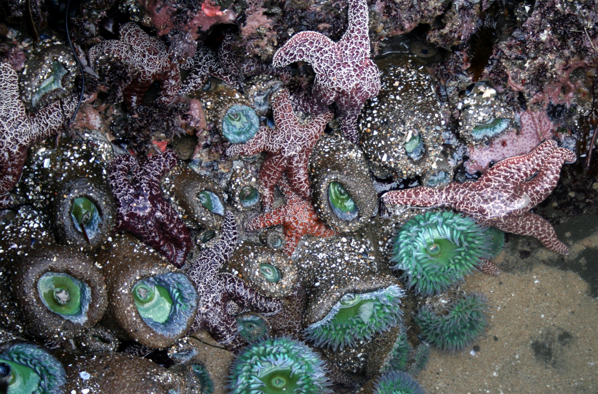
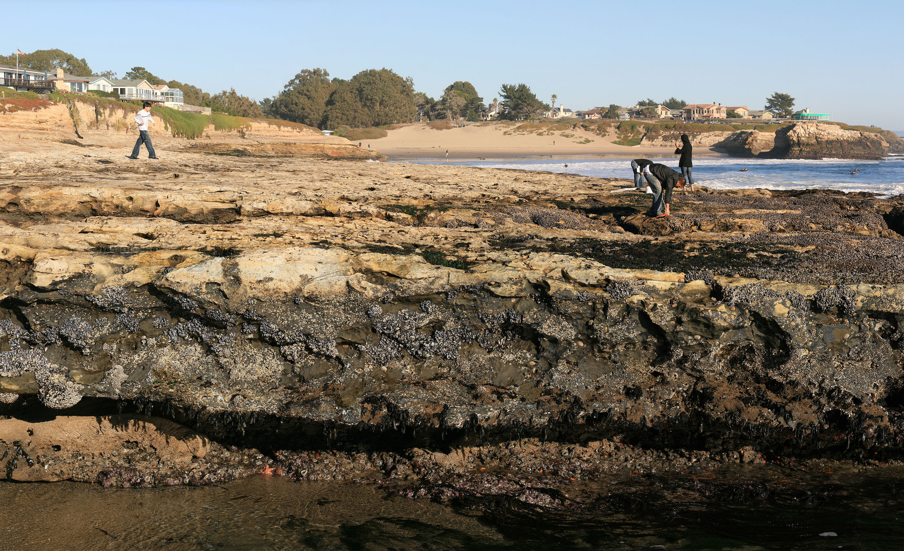
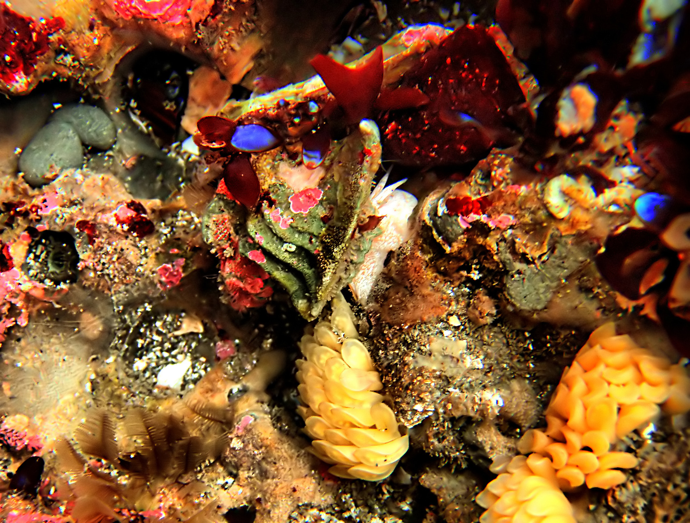
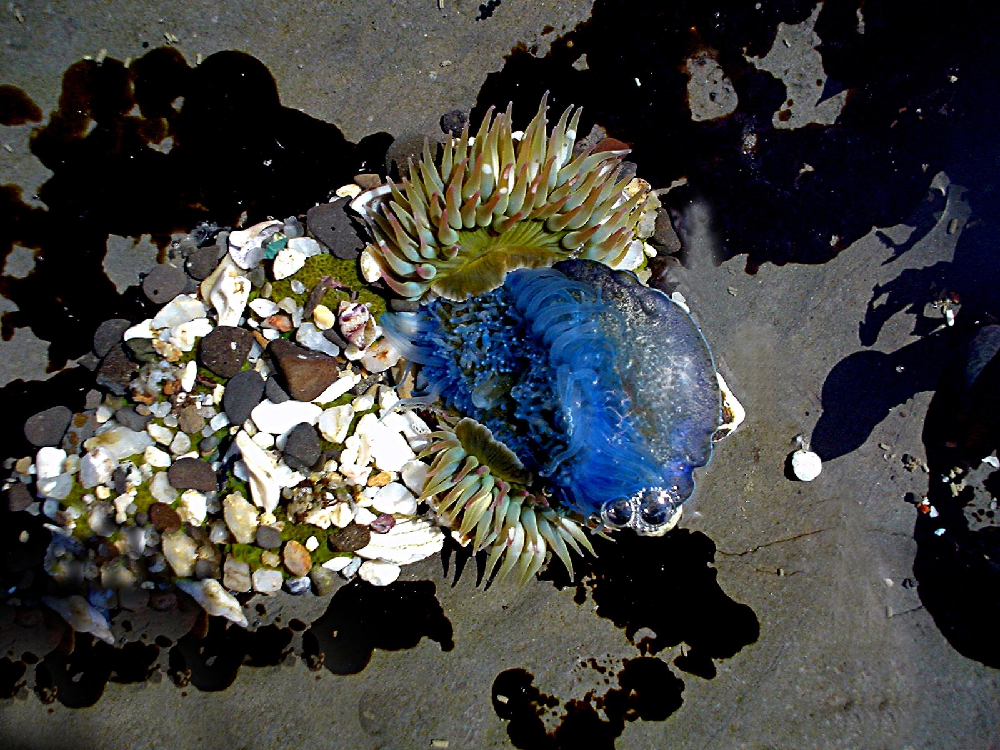

1.1 High tide zone
1.2 Low tide zone
2.1 Fauna
2.2 Flora
"Rockpool" redirects here. For other uses, see Rockpool (disambiguation).
The site of a tide pool in Santa Cruz, California showing sea stars, sea anemones, and sea sponges.
A tide pool in Porto Covo, west coast of Portugal Tide pools or rock pools are shallow pools of seawater that form on the rocky intertidal shore. Many of these pools exist as separate bodies of water only at low tide.
Many tide pools are habitats of especially adaptable animals that have engaged the attention of naturalists and marine biologists, as well as philosophical essayists: John Steinbeck wrote in The Log from the Sea of Cortez, "It is advisable to look from the tide pool to the stars and then back to the tide pool."[1] Tide pools exist in the "intertidal zone" (the area within the tidal range), which is submerged by the sea at high tides and during storms, and may receive spray from wave action. At other times the rocks may undergo other extreme conditions, baking in the sun or exposed to cold winds. Few organisms can survive such harsh conditions. Lichens and barnacles live in this zone.[1] Different barnacle species live at very tightly constrained elevations, with tidal conditions precisely determining the exact height of an assemblage relative to sea level.
The intertidal zone is periodically exposed to sun and wind, conditions that can cause barnacles to become desiccated. These animals therefore need to be well adapted to water loss. Their calcite shells are impermeable, and they possess two plates which they slide across their mouth opening when not feeding. These plates also protect against predation.[2]
The high tide zone is flooded during each high tide. Organisms must survive wave action, currents, and exposure to the sun. This zone is predominantly inhabited by seaweed and invertebrates, such as sea anemones, starfish, chitons, crabs, green algae, and mussels. Marine algae provide shelter for nudibranches and hermit crabs. The same waves and currents that make life in the high tide zone difficult bring food to filter feeders and other intertidal organisms.
Also called the "lower littoral zone", this area is mostly submerged and is exposed only during unusually low tide.[1] It often teems with life and has far more marine vegetation, especially seaweeds. There is also greater biodiversity. Organisms in this zone do not have to be as well adapted to drying out and temperature extremes. Low tide zone organisms include abalone, anemones, brown seaweed, chitons, crabs, green algae, hydroids, isopods, limpets, mussels, and sometimes even small vertebrates such as fish. These creatures can grow to larger sizes because there is more available energy and better water coverage: the water is shallow enough to allow additional sunlight for photosynthetic activity, with almost normal levels of salinity. This area is also relatively protected from large predators because of the wave action and shallow water.
Tide pools provide a home for hardy organisms such as starfish, mussels and clams. Inhabitants must be able to deal with a frequently changing environment: fluctuations in water temperature, salinity, and oxygen content. Hazards include waves, strong currents, exposure to midday sun and predators.
Waves can dislodge mussels and draw them out to sea. Gulls pick up and drop sea urchins to break them open. Starfish prey on mussels and are eaten by gulls themselves. Black bears are known to sometimes feast on intertidal creatures at low tide.[3] Although tide pool organisms must avoid getting washed away into the ocean, drying up in the sun, or being eaten, they depend on the tide pool's constant changes for food.[1]
The sea anemone Anthopleura elegantissima reproduces clones of itself through a process of longitudinal fission, in which the animal splits into two parts along its length.[4] The sea anemone Anthopleura sola often engages in territorial fights. The white tentacles (acrorhagi), which contain stinging cells, are for fighting. The sea anemones sting each other repeatedly until one of them moves.[5]
Some species of starfish can regenerate lost arms. Most species must retain an intact central part of the body to be able to regenerate, but a few can regrow from a single ray. The regeneration of these stars is possible because the vital organs are in the arms.[6]
Sea palms (Postelsia) look similar to miniature palm trees. They live in the middle to upper intertidal zones in areas with greater wave action. High wave action may increase nutrient availability and moves the blades of the thallus, allowing more sunlight to reach the organism so that it can photosynthesize. In addition, the constant wave action removes competitors, such as the mussel species Mytilus californianus.
Recent studies have shown that Postelsia grows in greater numbers when such competition exists; a control group with no competition produced fewer offspring than an experimental group with mussels; from this it is thought that the mussels provide protection for the developing gametophytes.[7] Alternatively, the mussels may prevent the growth of competing algae such as Corallina or Halosaccion, allowing Postelsia to grow freely after wave action has eliminated the mussels.[8]
1. "NPCA Tide pools". NPCA. September 5, 2008. Archived from the original on September 24, 2008.
2. Connell, Joseph H. (November 1972). "Community Interactions on Marine Rocky Intertidal Shores". Annual Review of Ecology and Systematics. 3 (1): 169–192. doi:10.1146/annurev.es.03.110172.001125. JSTOR 2096846
3. "Botanical Beach Tide Pools". British Columbia Parks. September 5, 2008. Archived from the original on July 24, 2008.
4. Andy Horton (September 5, 2008). "Sea Anemones". homepages.ed.ac.uk. Archived from the original on October 17, 2008.
5. "Snakelocks Anemone". British Marine Life Study Society. September 5, 2008. Retrieved September 6, 2008.
6. "Biology: Regeneration". Dana Krempels, Ph.D. September 5, 2008. Archived from the original on August 6, 2009.
7. Blanchette, Carol A. (April 1996). "Seasonal patterns of disturbance influence recruitment of the sea palm, Postelsia palmaeformis". Journal of Experimental Marine Biology and Ecology. 197 (1): 1–14. doi:10.1016/0022-0981(95)00141-7.
8. Paine, R.T. (December 1998). "Habitat Suitability and Local Population Persistence of the Sea Palm Postelsia Palmaeformis". Ecology. 69 (6): 1787–1794. doi:10.2307/1941157. JSTOR 1941157.